Potenzreihenentwicklung um beliebige Punkte in der Konvergenzscheibe
1. Satz
Sei  eine Potenzreihe in
eine Potenzreihe in  mit Konvergenzradius
mit Konvergenzradius  und Konvergenzscheibe 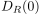.
Sei 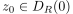, dann existiert eine Folge
und Konvergenzscheibe 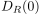.
Sei 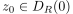, dann existiert eine Folge  , sodass für 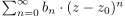 mit Konvergenzradius 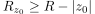 für einen Punkt 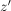 auf
, sodass für 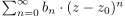 mit Konvergenzradius 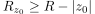 für einen Punkt 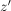 auf  gilt
gilt
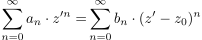
1
Insbesondere gilt für :
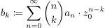
2